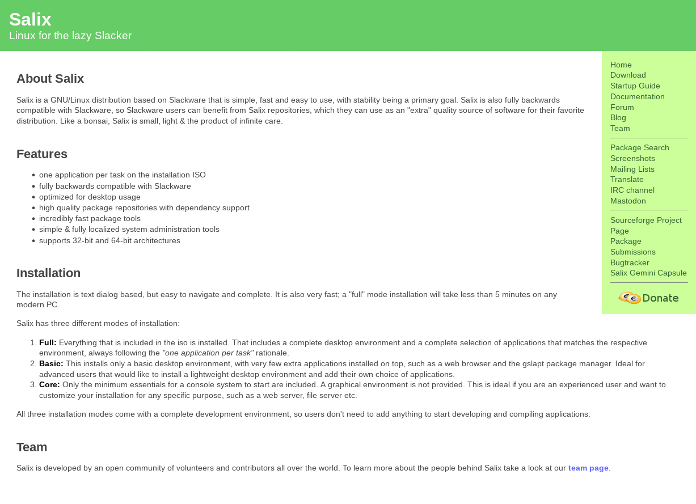

New Website, Again
Well, it’s been 13 years since the last update. It was probably time for another.
First, for the sake of posterity, here’s a screenshot of the old design:

As you can see, the new design is not really very different. Of course, this is deliberate. The old website had some interesting advantages that I wanted to keep no matter what. First, it was really small and loaded blazingly fast. Second, it didn’t use any JavaScript. Third, it didn’t look like yet another startup-oriented website full of marketing material. You know, the kind most websites seem to favor these days.
And that’s exactly how the new website is too.
You’ll find that the menu has moved to the top of the screen, the font is a bit bigger, the side margins are wider, and the site adapts much better to mobile screens. But otherwise, it follows the same ideas.
Sure, we’ve moved a few things around. There is now a single community page that lists all the ways to get in touch or get involved, for example. Some links that were previously in the vertical sidebar have been moved to this page.
The most important change is not immediately obvious. You would have to look at the Git repository to realize that. The previous site was using a custom build process in which the content was written in txt2tags and processed into the HTML files you saw online.
Now, it is a much more standardized process. The original content is now written in Markdown, a format that’s much more common than txt2tags. The Markdown files are processed using Hugo, a popular static site generator. In fact, we use the same process to build our documentation and this blog. We’ve already written about the reasons why such a move makes sense, so I won’t reiterate those here. Converting the content was much easier this time because the site had far fewer pages than the documentation did.
Oh, and the new site has dark mode now too. It switches according to your desktop settings. I know some people love this stuff.
Let’s see if we keep this design for another decade.